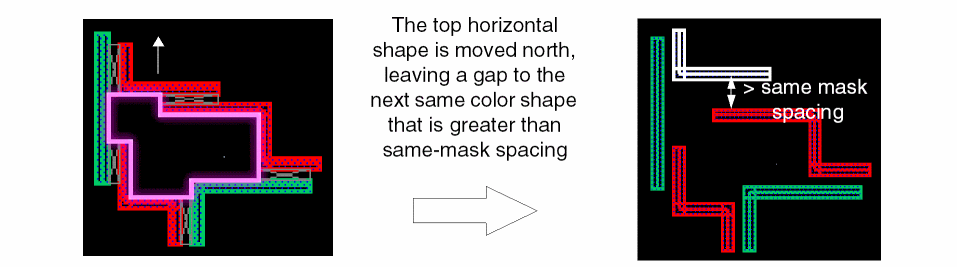
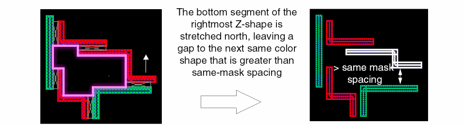
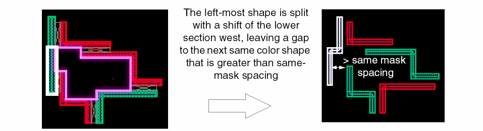

Methods to Fix Multiple Patterning Violations
Move, stretch, and split functions use open space to move shapes away from each other to fix multiple patterning violations.
-
Move shapes apart using Edit – Move.
 -
Stretch shapes using Edit – Stretch.
 -
Split shapes using Edit – Advanced – Split.

When shapes cannot be moved due to crowding, use stitch to replace one shape with two overlapping shapes.
Stitch is used to replace one shape with two overlapping or stitched shapes on different masks of the same layer. This is useful to resolve multiple patterning violations when there is limited or no open space in the area of the violation.
Some limitations while creating stitches are listed below:
- Stitch will not operate on "gray" shapes with no color assignment.
- Stitched shapes cannot be stretched.
- Unstitch cannot be performed if a stitched shape has been deleted or moved so that it no longer overlaps the original stitch region with its partner.
Return to top